Read it in order if this is your first match. After that, use it as a reference.
1The game in 1 minute
2Starting a match
3The game screen
4Controls
5Resources
6Population
7Building your base
8Your first 10 minutes
9The troops
10War and combat
11Eras: how your nation evolves
12Upgrades and research
13Running the country
14The Globe and diplomacy
15Air force and missiles
16Cities, roads and services
17Electric power
18Great Projects and the Space Program
19Each country's bonus
20Strategy tips
21Moving troops by sea and air
22Connection, drops and performance
23Glossary
About the numbers in this guideCosts and values shown here are the ones in the game when this guide was written. The game is updated often: if a number looks different, what you see in the match always wins.
Symbols used
💡 TipA shortcut or idea that helps you play better.
⚠ WarningA common mistake that can cost you the match.
ℹ Learn moreA detail for those who want to go deeper.
1The game in 1 minute
You lead a country. At the same time, you govern the nation and command the troops on the battlefield.
🗺
The theater of operations
The 3D map where everything actually happens: you gather resources, build your base, grow your population and train your army. This is the "real-time strategy" part.
🏛
The government
Your nation's panel: taxes, budget areas, research, public approval and diplomacy with other countries. One game day passes every second.
The two parts are linked. What your base produces fills the national treasury; the treasury pays for the army, construction and the budget areas; Defense sends supplies to the base; war casualties lower approval; and an angry people can bring down your government.
How to win
Victory
How to get it
🏆 Military
Destroy the Command Center (the HQ) of every enemy. This is the most common way.
🗺 Territorial
Control 70% of all territory on the map for 4 minutes in a row. The host chooses in the room whether this victory counts ("Elimination or territory") or not ("Elimination only").
⚖ Political
Make the enemy government fall: if its stability stays below 10 for 60 days in a row, it is defeated.
⚠ How to loseIf your Command Center is destroyed, you lose immediately. Always protect it.
In team mode, the whole team wins when only that team is left, including anyone who fell earlier (chapter 14).
What makes this game different
Real countries, all on equal footing. Every nation in the match starts with the same economy. Your country sets your starting region (forest, oil, farmland…) and gives you a unique bonus (chapter 19).
First you meet, then you fight. You can only declare war (or make pacts) on nations you have already met on the map, and without a declaration of war nobody can attack anybody.
Resources are scarce. You are short on resources early on and must choose where to spend them.
Your nation evolves through eras, from the Cold War to the Near Future, and changes its look with each era.
2Starting a match
From the main menu to the first second of the match.
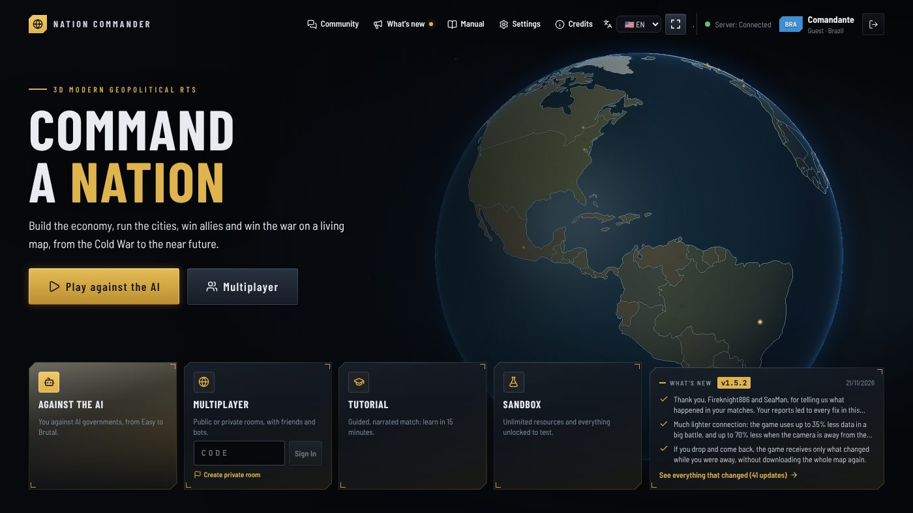
The main menu: the main action (Play against the AI), Multiplayer and the modes as cards, with the version's news.
Game modes
Play against the AI — you against governments run by the computer, from Easy to Brutal. Great for learning.
Multiplayer — public rooms (the list shows name, map, countries and open slots) or a private room: it creates a code, and your friends join by typing it in the Code field of the Multiplayer card.
Tutorial — a guided, narrated match that teaches the game in about 15 minutes.
Sandbox — unlimited resources and everything unlocked, to test troops and buildings without pressure.
Continue match — shows up when you have a match in progress. Matches save on their own.
💡 First time?Start with the Tutorial. The Manual button at the top of the menu sums up the game in short cards, and What's new lists what changed in each version.
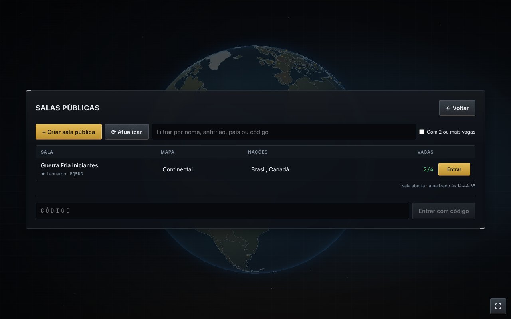
Public rooms: rooms opened by other commanders, with name, map, countries and open slots. Click Join.
The match room
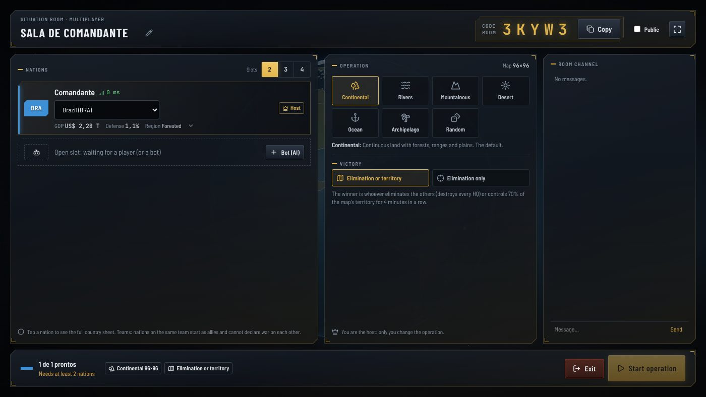
The multiplayer room: the room code up front (Copy), the nations and slots, the map type, the victory rule and the room chat. At the bottom, who is ready and the Start operation button.
Option
What it means
Your country
Each country has its own starting region (forest, oil…) and a unique bonus (chapter 19).
Room name
Multiplayer rooms only: the host picks the name shown in the public room list (up to 32 letters).
Public room
Checked, the room shows up in the public list for any commander to join. Unchecked, only people with the code can join.
Room slots
From 2 to 4 in the free version (up to 6 for subscribers). Each slot stays open for a player, or the host fills it with a bot (AI); the ✖ frees the slot.
Teams
Each nation can join a team (1 to 3). Nations on the same team start as allies, already in contact, and win together. Without teams it's everyone against everyone (pacts can still be made during the match).
Map type
Continental (the default), Rivers and Bridges (narrow crossings), Mountainous (lots of iron, strong defense), Desert (little food, lots of oil), Central Ocean (a sea in the middle, nations on the land around it), Archipelago (each nation on its own island, no bridges: contact is by transport ship and aircraft) or Random.
Victory
Elimination or territory (whoever destroys every HQ or controls 70% of the map for 4 minutes wins) or Elimination only.
Difficulty
See the table on the next page.
Difficulty levels
At the start there is a preparation period: the AI does not declare war and you build your economy in peace. The harder the level, the shorter it is.
Easy
Normal
Hard
Brutal
Preparation
12 min
8 min
5 min
3 min
First AI attack
around 14 min
around 10 min
around 8 min
around 6 min
Later attacks
small and spaced out (every 6 min)
medium (every 4 min)
large (every 3 min)
huge (every 2.5 min)
Border incidents
no
yes
yes
yes
AI aircraft / missiles
no / no
yes / no
yes / yes
yes / yes
AI advantage
—
—
—
+15% gathering
⚠ The first attack comes earlyRight after the preparation period, the AI attacks with whatever it has, even if it's just 3 or 4 soldiers. It's a test of your defense: a few soldiers and a tower near the base hold it easily. After that, each wave is bigger.
ℹ The AI plays fairAt every level the AI follows the same rules you do and cannot see through the fog of war either. The only extra is the Brutal gathering bonus, which is shown in the room.
⚠ Border incidentsFrom Normal up, during the preparation period, the AI sends 2 or 3 soldiers to harass farms and sawmills on the edge of your territory. It is not a declared war, but shots are exchanged for 75 seconds. Keep a few soldiers nearby.
What you get at the start
🏢
Command Center
Your capital. It trains citizens, stores supplies and sets your territory.
👷
11 citizens
The workforce that builds construction sites and works in farms, sawmills and quarries.
🔭
1 Scout
A fast scout with long sight. Use it to find resources and the enemy.
⚡
Coal power plant
Linked to the Command Center by a short road with power poles. It lights your first barracks and factories (chapter 17).
Plus: 200 supplies, 100 food, 150 wood, 60 stone, 50 oil and 160 coal. It looks like a lot, but it goes fast — spend carefully.
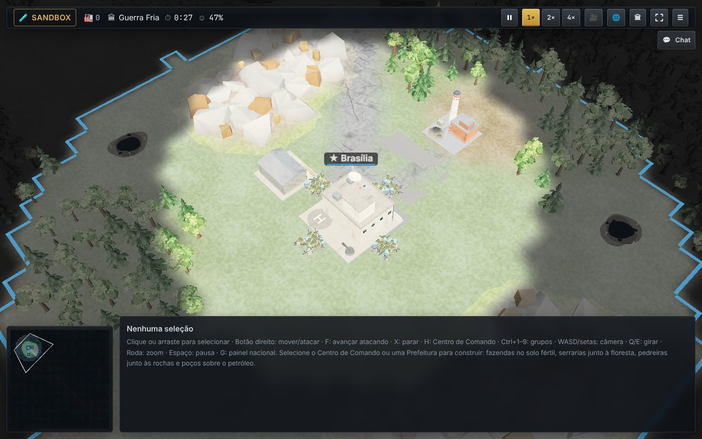
The start of the match: the Command Center (with your capital's name), the power plant linked to it by a road with poles, the blue line of your territory, rocks, forest, fertile soil (brown) and oil fields (dark patches).
3The game screen
With nothing selected, the screen is almost all map: the top bar, the minimap in one corner and the tool wheel in the other.
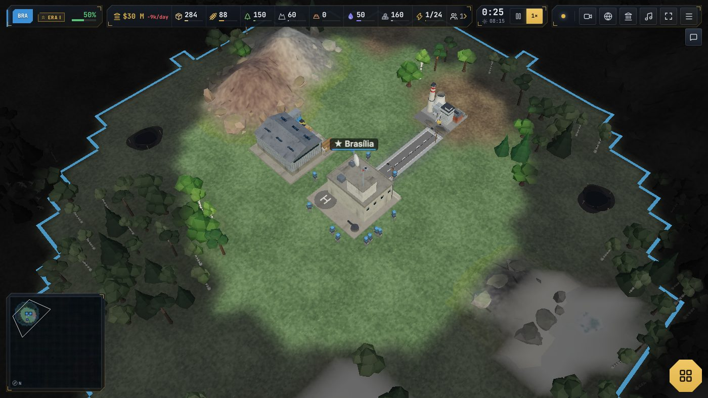
The match screen with nothing selected: resource bar at the top, minimap at the bottom left and the tool wheel button (gold) at the bottom right.
The resource bar
123456789
1US$ — the national treasury and how much it gains or loses per day (green or red). Tap it for the statement.
2🏭 — how many things are being produced right now.
3Supplies
4Food
5Wood
6Stone
7Iron
8Oil
9Population (hover for details).
After oil come coal and the ⚡ power meter: "28/48" means 28 of demand met out of 48 generated. It turns red when some building is stopped without power. On wide screens you also see the time and weather (☀ 10:15, 🌧, ❄, 🌙).
ℹ How to read each resource231 /1500 +2.9 means: you have 231, the limit is 1,500 and you are gaining 2.9 per second. A red number = you are losing that resource (food, for example, is eaten by the population).
The buttons on the right
1234567
1Pause (Space key).
2Speed 1×, 2× or 4× (against the AI only).
3Close-up — cinematic camera near the troops.
4Globe — diplomacy and war (Tab).
5Nation — the government panel (G).
6Full screen
7Menu — save, quit, settings.
Just below is the chat button. On phones, the bar shows only the resources: the nation, the clock and these buttons are behind the button with the little arrow, on the right.
The tool wheel
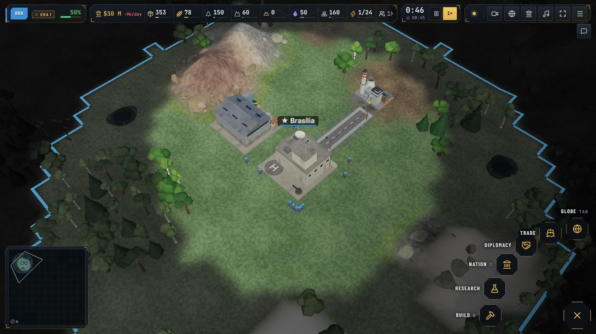
The open wheel: six tools in an arc, with the keyboard shortcut next to them.
The gold button in the bottom-right corner opens the wheel:
Build (B) — opens the Command Center's build menu from anywhere on the map.
Research — the country's technologies.
Nation (G) — the government panel.
Diplomacy and Trade — those tabs of the government panel.
Globe (Tab) — the world map, with each country's card.
Tap outside or press Esc to close it. When you select something, the wheel gets smaller and closes, making room for the selection panel.
The selection panel
The bottom panel only shows up when something is selected (or when an action is in progress, like choosing where to build). With nothing selected it disappears and the map stays clear.
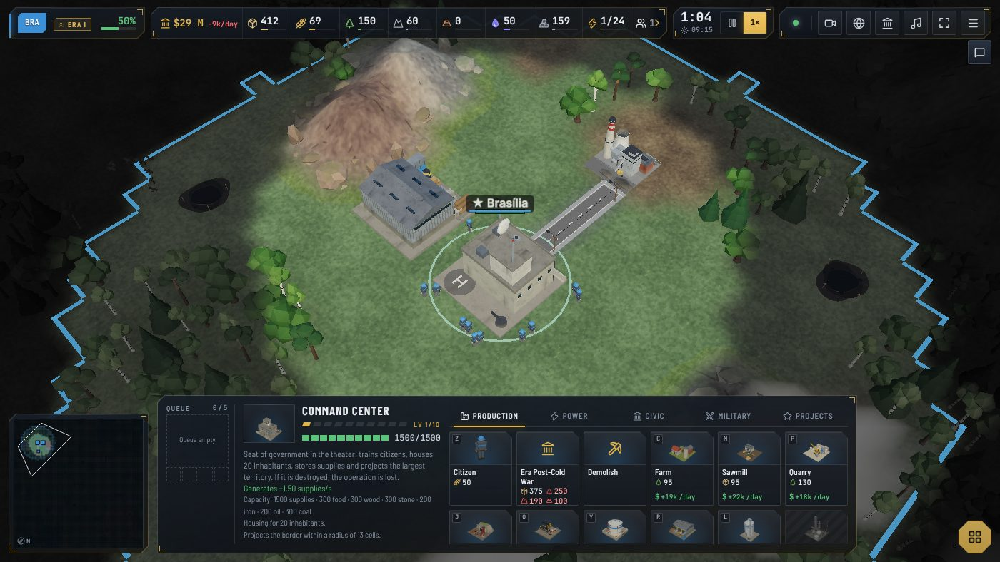
With the Command Center selected: on the left, the production queue; in the middle, health, level and what the building does; on the right, the build buttons in tabs (Production, Power, Civic, Military and Projects).
Weather, day and night
A match has a full day every 16 minutes: morning, golden dusk, about 4 minutes of night (starry sky and lit windows) and dawn. The weather depends on the countries in the room: snow if every nation is European (it builds up on the ground and roofs), heavy rain with lightning if any country is tropical, and rare rain on the Desert map. Weather is only visual, with one exception: the solar plant produces nothing at night.
The minimap sits in the bottom-left corner: click it to move the camera there (right-click sends the selected troops there). Dark areas have not been explored yet, and an attack on your forces pulses in red.
4Controls
The game works on computers, phones and tablets.
🖱 Computer
Action
How
Select
Left click. Drag to select several. Shift adds. Double click selects all of the same type.
Move / attack
Right click on the ground (move) or on the enemy (attack).
Attack-move
F and click the destination: troops fire at everything along the way.
Stop
X
Rally point
Select the barracks or factory and right click on the ground: new troops go there.
Groups
Ctrl+1…9 saves the group; 1…9 selects it.
Camera
WASD or arrows move · Q/E rotate · mouse wheel zooms · H back to the HQ.
Panels
B Build · G Nation · Tab Globe · F10 menu · Enter chat · Space pause · M mutes the music.
Cancel production
Del cancels the last item in the queue.
Every building and troop button shows its shortcut key in the corner (for example C Farm, M Sawmill, Z Citizen).
📱 Phone and tablet
Action
Gesture
Select
Short tap. Double tap selects all of the same type. The Area tool + drag selects several.
Give an order
Long press (half a second) on the destination or the enemy, or the Order tool + tap.
Build
Tool wheel → Build (or tap the HQ) → building button → tap the map → tap the same spot again or Confirm.
Camera
Drag with one finger · pinch to zoom · twist with two fingers.
Cancel
Cancel button; Deselect clears the selection.
The touch controls are folded into a button on the right (the little hand). Tap it to open: Order, Area (box selection), Add (adds to the selection), Zoom in, Zoom out, Rotate, HQ and Deselect.
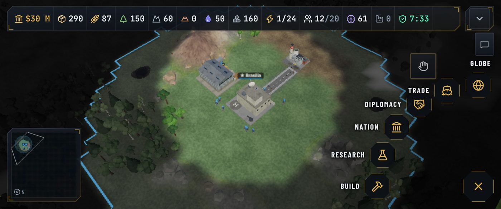
On a phone in landscape: the resource bar at the top, the chat and the folded touch controls on the right, and the tool wheel open.
💡 On phones, use the full-screen button to gain space. The game ignores very short taps and small movements to avoid accidental orders.
5Resources
Seven resources drive your base. Each comes from a different place on the map.
Resource
Where it comes from
Stored in
What it's for
📦 Supplies
Fixed income from the Command Center and city halls, the logistics paid by the Defense budget, a working Refinery and Steel Mill (0.35/s each) and every active, powered zoning industry (0.05/s)
Command Center
Vehicles, recruits, many buildings
🌾 Food
Farm on fertile soil (the brown ground). Never runs out.
Silo
Citizens, infantry and feeding the population
🪵 Wood
Sawmill next to the forest
Warehouse
Almost every building
🪨 Stone
Quarry next to rocks
Warehouse
Buildings, towers, artillery
⛓ Iron
Mine on the ore veins in the mountains
Warehouse
Vehicles, aircraft, research
🛢 Oil
Oil Well on top of an oil field (dark patch). Needs an Oil Tank nearby.
Oil Tank
Vehicles, aircraft, declaring war and the fuel that moving vehicles and ships burn
⚫ Coal
Comes out of the Mine along with iron (about 1 coal for every 7 iron)
Command Center and Warehouse
Fuel for the Coal Power Plant (chapter 17)
How gathering works
Placement matters. Each gathering building "claims" the resource cells around it (a farm up to 8 fertile cells; a sawmill up to 10 trees). When placing, the game shows how many cells you'll get and how much it will yield. Two buildings never share the same cells.
It needs people. A gathering building only yields in full with 6 workers (the oil well, with 4). With 3, it yields half.
Full storage = production stops. Build silos, warehouses and tanks before they fill up.
Mountains: each nation has a mountain on the flank of its base and a bigger, contested one between it and its neighbor. Their base has rock and ore veins with very large reserves: build the quarry and the mine right against the slope.
Deposits run out, slowly. Forest, rock, ore and oil are finite and large (they last a good part of the match). Each spot accepts at most 2 extractions: 2 sawmills per forest; on a mountain, 2 quarries, 2 mines or 1 of each. When it runs dry, build elsewhere. Only fertile soil is endless.
⚠ Each identical building costs moreEvery new building of the same type costs 18% more than the previous one. The 5th farm costs almost twice the 1st. So think before you build.
Industrial goods
In era 2 you can build the Refinery (oil → ⛽ fuel) and the Steel Mill (iron → 🔩 steel). While working, each one also yields 0.35 supplies per second. These goods replace part of the cost of vehicles and aircraft: 1 steel is worth 2 iron, and 1 fuel is worth 2 oil. In other words, the chain doubles the value of your iron and oil. ⛽ Vehicles and ships burn fuel as they move (tanks more than light armor; ships even more): the Refinery's fuel goes first, then oil. With neither, they move at half speed and oil turns red on the bar.
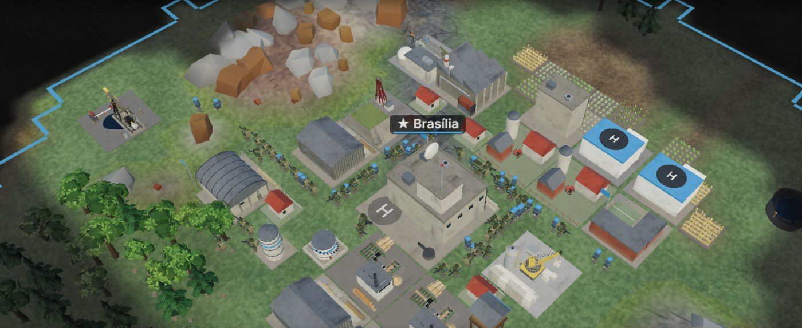
A base growing in the Cold War: the Command Center (Brasília) in the middle, farms, an oil well with its tank, houses, residential buildings, barracks, factory, silos, warehouse and the first troops.
6Population
People are the most valuable resource in the game.
👷
Citizen
Trained at the Command Center (Z) for 50 food, in 10 seconds. Works in buildings. Without citizens nothing produces. Idle citizens walk into buildings with open jobs on their own.
🪖
Recruit
Enlisted at the Military Base (60 food and 40 supplies). Stays in the reserve and is the crew of every troop: each soldier, tank or aircraft uses 1 recruit.
Housing
Building
Housing
Note
Command Center
20
Comes ready
House
+10
Cheap; expands the border a little
Residential Building
+20
Era 2; has upkeep (unpaid, it houses nobody)
City Hall
+10
Also founds a city (chapter 16)
The absolute cap is 500 inhabitants (citizens + military). Private houses and buildings from zoning also bring citizens.
Everybody eats
Every inhabitant eats food all the time. If food runs out there is famine and all production drops by half. That's why food shows in red on the bar: it's consumption.
💡 The big choiceEvery recruit is one less person working. An army too big too early = a weak economy. A big economy with no army = an easy target. Balancing the two is the heart of the game.
⚠ Common mistakeForgetting to build houses. When the population reaches the housing limit, you can't train anyone else — no citizens, no recruits.
7Building your base
Select the Command Center (or a City Hall) to open the build menu.
Territory
The colored line on the map is your border. You can only build inside it. Territory grows with the Command Center (and its upgrades), city halls, towers, bases, factories and houses. Without a declared war, foreign troops cannot enter your territory.
The build menu has 5 tabs
Tab
What's in it
⚒ Production
Citizen, era advance, Farm, Sawmill, Quarry, Mine, Oil Well, Oil Tank, Warehouse, Silo, Refinery and Steel Mill.
⚡ Power
Coal Power Plant, Wind Farm (era 2) and Solar Plant (era 3).
🏛 Civic
House, Residential Building, City Hall, School, Hospital, Police Station, University, Trade Terminal, Port, Road and Highway.
⚔ Military
Military Base, Vehicle Factory, Tower, Military Research Center, Anti-Air Battery, Air Base and Missile Silo.
★ Projects
The Great National Projects of the last era (chapter 18).
🏗 Build from anywhere:Build on the tool wheel (or the B key) opens the menu without moving the camera to the HQ. In the menu, ⛏ Demolish tears down your buildings and roads, with no refund. Only the Command Center cannot be demolished.
How to place
Click the building's button. A "ghost" of the building follows the mouse.
Green = you can build; red = you can't (the game tells you why). For gathering buildings, the panel shows how many resource cells it will claim. For buildings that use power, the powered area shows yellow on the ground and the panel says "⚡ Powered here" or "⚠ No power here".
Click to confirm. Construction starts and the resources are spent. Tip: leave corridors between buildings so troops can pass.
Builders
Every construction site needs citizen builders: up to 4 per site. With 4, it goes at normal speed; each one fewer takes away 25% of the speed (a single builder takes 4 times longer); with none, the site stops. You see the citizens walking to the site and working around it.
Builders come first from idle citizens and, if there aren't enough, from the newest jobs: while the site is open, production loses those workers. When it's done, they go back to their posts.
With several sites at once, the oldest gets builders first.
On the site's panel, 👷 Builders − / + picks how many (1 to 4). Fewer builders = slower site, but the economy keeps running.
8Your first 10 minutes
A simple order that works with any country. Once you get the hang of it, make your own.
Send the Scout exploring. Select it and click far away, toward the center of the map. It reveals resources and shows where the enemy is — and making contact with the other nations is what allows diplomacy and war.
Keep training citizens at the Command Center (Z) while you have food and housing.
Farm (C) on fertile soil and Sawmill (M) by the forest. These two support everything else.
Quarry (P) on the rocks and a House before housing fills up.
Military Base: enlist a few recruits and train 3 or 4 infantry to defend against border incidents.
Mine (iron) and Oil Well with an Oil Tank next to it. Without them, no vehicles.
Silo and Warehouse when a resource bar is nearly full.
Upgrade the Command Center (⬆ button on the panel). It unlocks higher levels for other buildings and the eras.
Vehicle Factory and, at HQ level 3, advance to era 2.
Before the preparation period ends, have a small army near the base and a Watchtower facing the enemy. On Normal, the first AI attack arrives around minute 10.
💡 Watch the top bar all the timeThe resource you're shortest on is your bottleneck. If it's wood, build another sawmill; if it's food, another farm. A resource sitting at the storage limit is wasted: spend it or sell it on the domestic market (chapter 13).
💡 Grayed-out button?When a button is gray, hover (or tap) it: the game explains why, for example "20 oil missing", "no recruit" or "requires era 2".
ℹ What about the government?For the first few minutes, leave the government as it is. Once the base is running, open the Nation panel (G) and pick a research. Chapter 13 explains the rest.
9The troops
Each troop has a role. None wins alone: mix them.
Troop
Era
Where
Good against
Weak against / note
Scout
1
Military Base
Nobody — it's for seeing
Barely fights; fast with long sight
Infantry
1
Military Base
Infantry
Armor: rifles barely hurt vehicles
Armored Vehicle
1
Factory
Infantry; giving sight to artillery
Tanks. Keeps troops supplied in enemy land
Tank
2
Factory
Almost everything up close
Anti-Tank Infantry; slow in forest and mud
Artillery
2
Factory
Everything from afar (range 16)
Fragile and blind: needs someone giving it sight
Anti-Tank Infantry
2
Military Base
Vehicles (triple damage)
Infantry
Combat Engineer
2
Military Base
— (support)
Mines, roads, obstacles; weak in combat
Special Forces
3
Military Base
Infantry and buildings
Fast and accurate; expensive
Mobile Anti-Air
3
Factory
Aircraft and missiles
Weak against ground troops
Mobile Phalanx CIWS
3
Factory
Rockets in flight, aircraft and missiles; infantry
Armor: the 20 mm Gatling barely hurts it
Rocket Launcher
3
Factory
Bases and groups (range 24, area damage)
Can't fire up close; slow reload; fragile
Modern Tank
4
Factory
Everything
Very expensive; Anti-Tank still hurts
L402 Landing Ship
1
Port
Carries 10 soldiers and 10 vehicles by sea
Unarmed; if sunk, the cargo is lost
Frigate
1
Port
Ships and the coast; has anti-air and carries 15 soldiers
Submarines; doesn't fire at troops on land
Attack Submarine
2
Port
Ships (only another submarine can hit it)
Can't attack land
Missile Submarine
3
Port
Ships and 4 cruise missiles
Very expensive; reloads at the Port
Aircraft Carrier
3
Port
4 carrier fighters
No weapon of its own; if sunk, the fighters are lost
Fishing Boat
1
Port
— (civilian): fishes on its own and brings food
Up to 3 per Port; unarmed, can be sunk in war
The basic triangle
The arrow points from the winner to the loser. Artillery and rockets stay at the back, protected, firing from afar.
Veterancy
Every kill counts toward the troop's rank. Experienced troops are worth gold — pull them out of combat when they're weak.
Rank
Kills
Bonus
Recruit
0
—
Veteran
2
+10% damage, +8% health
Elite
5
+20% damage, +16% health
Hero
10
+30% damage, +24% health
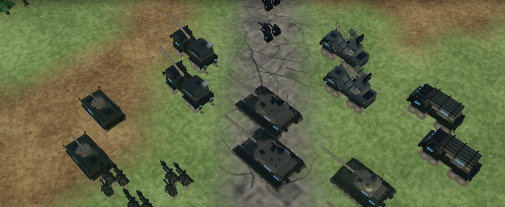
A mixed Near Future army: Modern Tanks, tanks, artillery, Mobile Anti-Air, Rocket Launchers and infantry.
Producing troops
Have recruits in the reserve (enlist them at the Military Base).
Select the Military Base (infantry) or the Vehicle Factory (vehicles) and click the troop. It goes into the queue (up to 5 items).
Right-click the ground with the building selected to set the rally point.
Military research
Some troops must be unlocked at the Military Research Center (T), besides being in the right era: Tracked armor (Tank), Field artillery, Anti-tank weapons, Combat engineering, Mobile air defense, Special operations, Multiple rocket launchers and Next-generation armor (Modern Tank). A locked troop's button shows what's missing.
Modernization
National defense research unlocks modernization packages (armor, sights, engine…). Take the troop to a Military Base or Factory, select it and click the package. It stays out of combat for a while as it gets the equipment.
At sea: the Navy
Every ship comes from the Port and uses several recruits as crew (L402 4, frigate 6, carrier 8, cargo ship 5, submarine 3; the fishing boat uses none). Each warship requires national research (Naval logistics, Naval warfare, Submarines, Submarine cruise missiles, Carrier aviation). Only a submarine can hit another submarine. The Cargo Ship carries sea trade between nations.
The Fishing Boat is civilian and works on its own: it leaves the Port, fishes at sea near the coast and comes back to unload food (it needs a silo with room). Up to 3 per Port, and each new one costs 18% more.
Loading troops onto ships, landing them on the coast, dropping paratroopers from the C-5 Galaxy and founding colonies on islands: see chapter 21.
💡 A starting army: 4 infantry + 2 armored vehicles; then tanks, anti-tank infantry and 2 artillery behind everything.
10War and combat
No surprise attacks: war must be declared.
Declaring war
Find the enemy. Nations on the map start without contact. Contact comes when a troop or building of yours sights the territory or forces of the other (you get a "Contact established" notice). Send the Scout ahead.
Open the Globe (Tab), click the country and choose Declare war. A window shows the cost before you confirm.
Cost: 150 supplies, 50 oil, the equivalent of 60 days of treasury income and 3 approval points. Treaties with that country are broken and its allies may sanction you.
With a pact in force (non-aggression or alliance), the declaration is refused until someone breaks the pact. In a team, you can't declare war on a teammate.
Without war, attack orders are refused and troops don't fire on their own. The AI follows the same rule: it must also declare war before attacking.
Alerts
Big events are shown to every player in a banner at the top, with a bugle call: a declaration of war, a new era, nuclear weapons research (start and end) and a Great Project (start and end). When your forces are attacked, a siren sounds and the spot pulses red on the minimap: click it to go to the attack.
Fog of war
You only see what your troops and buildings see. Never-explored areas are dark; explored areas out of sight are dimmed, and enemy buildings there look as they did the last time you saw them.
Attrition: fighting far from home wears you down
Troops in enemy territory slowly lose health. To avoid it, keep an Armored Vehicle nearby: it carries supplies and protects the group from attrition.
Mines and obstacles
The Combat Engineer (era 2, Combat engineering military research) lays anti-tank mines:
Select one or more engineers and click Lay mine.
Click the spot: the nearest engineer walks there and stands still for 3 seconds laying it. Each mine costs 15 iron and 10 supplies; each nation can have up to 24.
The mine only goes off for enemy vehicles (soldiers walk over it) and also damages whoever is around.
Invisible: the enemy can't see the mine, not even with the satellite. Only their Engineers and Special Forces (up to 7 away) and the reconnaissance aircraft find it.
Clearing: an engineer standing near an already detected enemy mine disarms it on its own in 2.5 seconds.
The engineer also puts up anti-tank obstacles, which block vehicles, and paves roads outside your territory.
⚠ Roads are the favorite place for minesAdvancing along a road to the enemy base? Send an engineer or infantry ahead.
Tactics that work
Attack-move (F) instead of just moving: troops stop to fire at whoever shows up.
Sight first. Artillery and Rocket Launchers only fire at what someone can see. Use armored vehicles, scouts, towers or reconnaissance aircraft.
Hit the economy. Enemy farms, sawmills and wells are often far from the HQ and poorly defended.
Pull back wounded troops; a Hospital heals whoever is in its area.
Groups with Ctrl+number: one for the army, another for the artillery.
11Eras: how your nation evolves
A match goes through four eras. Each one changes the look of your base and unlocks new troops and buildings.
Era 1 · start
Cold War
Worn concrete and paint. Infantry, Armored Vehicle, Scout. Gathering, houses, Military Base, Factory, Tower, School and Port (with L402, Frigate and Cargo Ship).
Era 2 · HQ level 3
Post-Cold War
Prefab metal and radars. Tank, Artillery, Anti-Tank, Engineer, Attack Submarine. Research Center, Residential Building, Trade, University, Anti-Air, Hospital, Refinery and Steel Mill.
Era 3 · HQ level 5
Digital Age
Glass and steel, solar panels and antennas. Mobile Anti-Air, Mobile Phalanx CIWS, Special Forces, Rocket Launcher. Air Base with fighters, reconnaissance, cargo aircraft and the C-5 Galaxy. Missile Submarine and Aircraft Carrier. Upgrades up to level 8.
Era 4 · HQ level 7
Near Future
Dark composite, LED strips and drones. Modern Tank, bombers, Missile Silo and the Great Projects. Upgrades up to level 10.
How to advance
Select the Command Center and click Era …. It's a construction that costs resources and US$ from the treasury and requires a minimum HQ level. While it runs, the top of the screen shows the progress. Canceling refunds 75%. When you advance, every player is told.
The same base in the Cold War (left) and in the Near Future (right): the whole nation changes its look.
💡 Advance early or late? Advancing early gets you better troops, but uses resources that could become an army. Under attack, defend first and advance when you're safe.
12Upgrades and research
Buildings level up; the country researches technologies.
Building upgrades
Select a finished building and click ⬆ Level. A panel shows the cost (resources + US$), the time, the requirements and what improves.
Up to 10 levels (house up to 3, tower up to 5). No building goes more than 2 levels above the Command Center — so upgrade the HQ first.
During the work the building runs at 50%. Canceling refunds 80%.
At level 6 you choose a specialization, which is permanent. Example: the HQ can become an Administrative center (more territory and income), a Logistics center (more storage) or a Fortified HQ (much more health and defense).
High levels require national research, national infrastructure and, at HQ 9+, political stability.
Knowledge and cities
Every research costs US$ and knowledge points (🧠 on the top bar). Points come from Schools (0.1 per second) and Universities (0.3 per second, from era 2), with workers and power. You start with 60.
Each HQ or city hall is a city, and each building belongs to the nearest one. Each city takes 1 School, 1 University and 1 of each era-3 production building. For more, found more cities.
Military research (Research Center): resources + 🧠 15, 30 or 50 + US$ from the treasury. National research: US$ per day from the treasury while it runs + 🧠, paid once when it starts.
Era 3, Resources area:Eucalyptus forestry unlocks the Eucalyptus Forest (plants eucalyptus on the plain around it, like a farm; slow wood that never runs out) and the Charcoal Kiln next to it (2 wood become 1 coal). Underground mining unlocks the Underground Mine, which goes anywhere in your territory and extracts a little stone, iron and coal without running out. All of them use power.
National research
In the Nation → Research panel you pick one technology at a time. Research is split into four areas (Defense, State and logistics, Industry and construction, Natural resources): tap an area and its tree appears, with research linked by lines (✔ done, ▶ in progress, ○ available, 🔒 missing a prerequisite). Tap a research to see what it unlocks, its cost, its duration and the Research button. Each research has a cost per day and a duration in days: while it runs, the cost leaves the treasury every day (someone earning 300 thousand a day and researching something at 40 thousand now earns 260 thousand). Without money in the treasury for the day, research stops and waits. Some technologies and what they do:
Area
Examples
State and logistics
Integrated logistics, Territorial administration, Road engineering (Highway), Foreign trade (Trade Terminal), Naval logistics (Port and ships), Urban planning (Residential Building), Public health (Hospital), Public security (Police Station), Higher education (University), Financial market, Space technology
ℹ Two different kinds of researchNational research (Nation panel) improves the country and unlocks buildings (Port, Hospital, power plants, Air Base…), modernizations and missiles. A locked building's button says "requires research". Military research (Research Center on the map) unlocks new troops. National research is paid per day from the treasury; military research, once when it starts.
13Running the country
The Nation panel (G) is your cabinet.
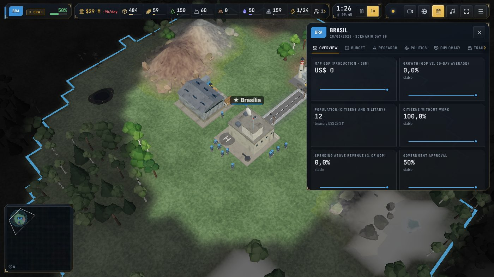
Overview: the country's GDP (made of what the map produces), growth, population, citizens without work and approval, with charts.
The tabs
Overview — the health of the country.
Budget — taxes and the government areas.
Research — national technologies.
Politics — decrees, factions and requests.
Diplomacy — relations and treaties.
Trade — buying and selling resources.
Diagnosis — why approval goes up or down.
Data — the history of the country's numbers.
The budget in plain words
The budget changes the country that is on the map. At the top of the tab are the taxes: residential, commercial and industrial (0 to 30%). More tax fills the treasury, but people like you less and zoned neighborhoods grow more slowly.
Below are the government's seven areas. Each goes from 50% to 150%: 100% is the normal cost, and the cost per day is shown next to it.
Area
Pays for
If you raise it…
Defense
military logistics
More supplies per second at your base.
Infrastructure
building and road upkeep
Faster construction and the infrastructure that high HQ levels require (below ~95%, HQ 8 is locked).
Education
schools and universities
More knowledge (🧠) for research.
Health
hospitals
Citizens trained faster and hospitals weigh more in approval.
Security
police stations
Police stations weigh more in approval and protests are weaker.
Research
the day of the research in progress
Faster national (and military) research.
Welfare
administration and city halls
Direct approval.
There is no public debt. If the treasury can't close the day, the areas are cut evenly (10% at a time, down to 50%) and a notice says which ones; their effects drop too, and unpaid bills weigh on approval.
Approval and stability
Approval shows how much the people like the government. It comes from what happens on the map: high taxes, citizens without work, unpaid bills and war casualties lower it; services covering the neighborhoods, the Welfare area, growth and victories raise it. Below 35, protests start. Stability slowly follows approval; if it stays below 10 for 60 days, the government falls and you lose.
Decrees (Politics tab)
Each decree has a gain and a price, and lasts at least 30 days.
Decree
Gain
Price
Conscription
Recruits 40% cheaper
−4 approval
War economy
Military production 20% faster
More inflation
Rationing
Population eats 40% less
−3 approval
Martial law
More stability, fewer protests
−6 approval
Factions
Armed Forces, Industry, Agribusiness, Unions and Public Opinion have a satisfaction from 0 to 100 and make demands with a 90-day deadline, like "have 2 finished factories" or "keep 400 food in stock".
Met: the faction gets happier, approval rises and sometimes resources arrive as a gift.
Failed: satisfaction drops. Below 30 the faction protests: slower military production, less gathering or lower approval.
Keep an eye on the top-left corner of the screen: demands show up there (for example, "Armed Forces demand: have 1 finished air base in the theater within 90 days").
Requests from the powers
The biggest economies you know may ask for something with a 90-day deadline: exporting, strengthening defense, finishing a research or not declaring war on someone. Meeting it gives +12 relation and financial aid; failing or refusing worsens the relation.
Trade between nations
With a Trade Terminal (era 2) you trade with the other nations in the match, in the Nation → Trade panel. Everything goes through the national treasury, and nothing is instant: the money only reaches the seller, and the goods only reach the buyer, when the cargo arrives.
Only listings from nations you've already met on the map show up.
Simple sale: list "X of a resource for US$ Y". The goods stay reserved until someone buys (or you withdraw the listing).
Supply contract: "X of each resource (up to 3) every N days, for US$ Z a month". It runs until someone ends it, or drops on its own if stock is missing on the date or the buyer can't pay for the delivery.
The buyer picks the transport: 🚚 truck, with both Trade Terminals linked by road or highway; 🚢 ship, with a Port on both sides linked by water and a seller's Cargo Ship (each cargo ship carries one shipment at a time); ✈️ air, with an Air Base or HQ level 4 on both sides, in a straight line and with little cargo per flight.
Danger on the way: troops, towers and anti-air of anyone at war with the seller or the buyer destroy the vehicle. Nobody pays, and the cargo is lost.
There is no trade between nations at war. If war starts, cargo on the way is seized and the contract drops.
World market
Countries outside the match buy and sell directly, without listings, but pay worse: they buy at 80% of the reference price and sell at 160%, up to 300 of each resource per day. Cargo leaves or enters through the edge of the map and is also paid only on arrival. It's for tight spots; a neighbor usually pays better.
💡 Surplus of one resource, short on another?List what you have in excess and buy what you lack from a neighbor. Link your Trade Terminal to theirs with a highway: the truck is the cheapest transport to keep and the easiest to protect.
Domestic market: surplus becomes supplies
In the middle of a match it's common to have extra food, wood, stone and iron and be short on supplies, which pay for the HQ, eras, recruits and troops. Select your Trade Terminal (era 2): its panel has the domestic market. Pick a resource and sell a lot of 100 or 500. The supplies arrive at once.
Resource
Food
Wood
Stone
Iron
Oil
Coal
Full price (supplies per unit)
0.30
0.25
0.20
0.50
0.60
0.35
Selling 500 at once
+121
+101
+81
+202
+243
+142
The price drops when you sell a lot: with 1,000 units of a resource sold recently, it's worth half. The current price shows in the panel (in yellow when it's low).
The price recovers on its own in about 8 minutes.
Splitting the sale into small lots doesn't pay more than selling everything at once.
The buttons are grayed out when stock is short or when the supplies storage has no room for the payment.
💡 Sell a little of several resourcesA thousand units each of food, wood, stone and iron sold together pay for almost the whole advance to era 3. Selling a little of each pays more than dumping a single resource.
The national treasury
The US$ on the bar is the national treasury. Every game day (1 second) income comes in and expenses go out; next to the balance you see how much you're earning or losing per day. Tap it for the statement:
Income
Expenses
Production from farms, gathering and industry
Army upkeep (each troop; vehicles and aircraft cost more)
Productivity (infrastructure and education)
Power consumed
Taxes from citizens and zoned lots
The seven budget areas (upkeep, services, research…)
Trade sales (cargo delivered)
Trade purchases (cargo received)
Trade agreements with outside countries
Diplomatic missions and alliances with outside countries
War, contact missions, aid to other countries and operations off the map also come out of the treasury. There is no debt: what the country doesn't have, it doesn't spend.
The treasury has no ceiling and never goes negative: an army that's too big makes the country lose money, the budget areas are cut and upgrades, roads and eras wait for the balance to come back.
14The Globe and diplomacy
The countries nobody picked are run by the AI, with their own economy. They can be your partners — or your enemy's.
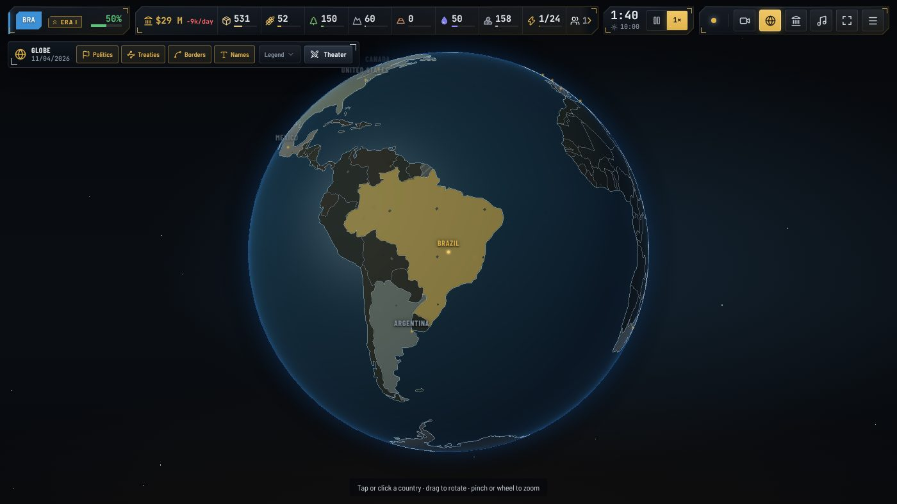
The Globe (Tab). The buttons at the top show politics, treaties, borders and names. Click a country to see the actions.
Contact
You only deal with countries you know. On the match map, contact comes from meeting: when a troop or building of yours sights another nation's territory or forces, the two get to know each other ("Contact established" notice). Before that, no war, pact, alliance or trade with it. Nations on the same team start already in contact. Off the map, you know the neighbors in your region; for the rest, send a contact mission (it costs money and takes a few days).
Diplomatic actions
Action
What it does
Trade agreement
Both economies grow more for 360 days. Up to 4 per country; the great powers want a good relation before signing.
Defense agreement
The ally sends military aid (supplies per second) to your base. Requires a high relation.
Sanctions
Hurt the target's economy and approval. You can ask other countries to sanction your enemy.
Diplomatic mission
Improves the relation little by little.
Aid
Improves the relation quickly; it comes out of the treasury.
Relations go from −100 to +100 and the game always shows the reason for each number. Breaking an agreement early hurts your reputation with everyone.
Pacts and alliances with nations on the map
Without teams, the nations in the match (humans and bots) can sign pacts after meeting, through the country's card on the Globe:
Non-aggression
Alliance
Effect
Neither can attack the other.
The same, plus shared vision, sending money, resources and troops in support.
Signing
The one who proposes pays 20 days of their own treasury income.
30 days.
Breaking
The one who breaks it pays 90 days of income to the other side (without money, you can't break it).
120 days.
A bot answers right away, weighing the relation, who is stronger, common enemies and the ongoing war. Refused? Wait 60 days to propose again.
For a human, the proposal becomes an invitation they accept or refuse within 60 days.
Signing a pact during a war makes peace. Non-aggression can turn into an alliance.
If, after an elimination, only nations with pacts among themselves are left, the pacts fall and war returns: in the end, only one wins.
Between allies
Shared vision: you see what your ally's troops and buildings see.
Troops in support: with troops selected, the Support button (with the country's name) sends them to attack-move to the ally's Command Center.
Send money (country card → Send money or resources): type the amount in US$ millions (minimum 1). It leaves your treasury and reaches your ally's at once, with no freight.
Send resources (same window): choose up to 6 resources and the transport. The cargo leaves your stock at once and travels like trade cargo (it can be attacked by anyone at war with either of you). Freight: truck 4% (Trade Terminals linked by road or highway), ship 8% (a Port on both sides and a free Cargo Ship) or air 20% (Air Base or HQ level 4 on both sides and a cargo aircraft ready).
Team mode
Set in the room before starting. Nations on the same team are allies from the first to the last day: you can't break the alliance or declare war on a teammate, and no other pact is signed. The match ends when only one team is left, and the whole team wins.
Operations in other countries
At war with a country that isn't on your map? From the Globe's Operational Map you pick one of its regions and send real troops from your base. They travel, fight a local battle and come back with whatever is left. Occupied regions yield supplies (and oil, if there is any).
15Air force and missiles
In era 3 the sky joins the war.
Air Base
It has a hangar for 4 aircraft. Each aircraft needs a recruit as pilot, burns oil (or fuel) on every mission and has upkeep.
Aircraft
What it's for
Reconnaissance
Reveals an area for 40 seconds and marks the enemy buildings it sees.
Multirole fighter
Attacks targets already discovered and intercepts enemy aircraft near your base.
Bomber (era 4)
Carpet bombing: heavy damage on the target and nearby buildings. Slow and defenseless against fighters.
Cargo aircraft
Expands air trade.
C-5 Galaxy (base level 2)
Paratroopers: up to 12 soldiers and 3 vehicles; if shot down, everyone dies (chapter 21).
Attack drone
A munition that flies to the chosen spot and dives onto the target (range 170). In the first 10 seconds you can take over the drone (button or T key) and fly it in first person. It is used up in the attack.
ℹ Discover first, then attackFighters and bombers only attack buildings you have already discovered (with reconnaissance, troops or the satellite). Attacking infrastructure requires the Guided munitions national research.
Air defense
The Anti-Air Battery (fixed), Mobile Anti-Air (follows the army), Mobile Phalanx CIWS, towers and fighters ready at the base have a chance to shoot down aircraft and intercept missiles. More defenses = more chance (up to a limit).
The Iron Dome (era 4, Ballistic missiles research, Military tab) protects an area of 22 around it: it fires 2 interceptors per missile, with 90% accuracy, and holds 4 (reloading one every 40 seconds). It stops the regular ballistic missile; the heavy missile and the nuclear warhead get through.
Ballistic missiles
Research Ballistic missiles and build a Missile Silo (holds up to 2).
Produce the missile (expensive and slow).
Choose the target inside the range ring (90 for the silo; 120 with the silo at level 2): any spot outside your border that you have already explored (it doesn't need to be in sight now); in another nation's territory, only at war. Prepare, authorize by holding the button, and launch.
Build the silo near the border to reach the enemy. The Missile Submarine carries 4 cruise missiles (range 70) and reloads next to one of your Ports.
☢ Nuclear warheadWith the Nuclear weapons research, the silo can produce a nuclear warhead: huge damage over a large area and half the chance of being intercepted. But every nuclear launch causes a shock to the whole world's economy, yours included: GDP falls, inflation and unemployment rise and base income shrinks for a few months. Use it very carefully.
🌊 TsunamiA nuclear warhead that hits the sea raises a tsunami: the wave runs through the water (going around islands and continents) for up to 40 cells, sinks or damages ships and floods 3 cells of land, destroying buildings and troops on the coast and flattening the woods. It hits everyone, including whoever launched it and their allies. Only a submerged submarine escapes.
16Cities, roads and services
City halls: found new cities
The City Hall (Civic tab) founds a city named after a real city in your country — São Paulo, Rio de Janeiro, Salvador… It greatly expands your border, houses 10 people, stores resources, yields supplies and works as a second building center. It must be at least 10 cells away from another city. Unlike the HQ, a city hall of yours can be demolished.
💡 ColoniesA city hall can also be built on neutral land (never on another nation's), as long as a troop or ship of yours is within 8 cells of the site. Once finished, the new city's border forms around it. That's how you take an uninhabited island on the Archipelago map.
⚠ Cities can be capturedIf the enemy destroys one of your city halls, it passes to them, along with your buildings within 8 cells. You can take it back the same way. The Command Center is never captured: only destroyed.
Roads
Click Road (the HQ's Civic tab, or on the Engineer). Then mark the cells: a click marks or unmarks a cell, and click-and-drag marks a path: straight, L-shaped or diagonal (the lane runs slanted, corner to corner). On phones, each tap marks a cell. The preview shows in green where you can pave and in red where you can't. To finish, tap Build (or Enter): up to 40 cells per job, paying stone and a little money per cell. Each cell becomes a stretch of asphalt with a lane line, sidewalk and curb, and intersections get crosswalks.
All units move faster on roads, and trade convoys too.
Houses and residential buildings linked to a road give up to +4 approval ("paved neighborhood").
+15% production: farms, sawmills, quarries, mines, wells, refinery and steel mill linked by road to the Command Center or a city hall produce 15% more.
Outside your territory, only with an Engineer nearby.
Tunnel: the road goes under rock and mountains, from one side to the other. Each tunnel cell costs 3 times the stone and money of a normal cell. The mountain stays on top: nothing can be built on a tunnel or zoned beside it, and troops inside disappear from view. It carries power, trucks and caravans like any road.
Careful: an enemy at war uses your roads too.
Highways
The Highway (the HQ's Civic tab) is a dual carriageway with a median and guardrail. It's marked the same way as a road and is meant to link countries.
It leaves your border without an engineer, but only over neutral land. It never enters another nation's territory, in peace or at war (nobody can fill your country with highways to get in your way).
It meets your neighbor's in neutral land. Each nation builds its piece up to neutral land, and they connect there.
Faster: cargo trucks and caravans go twice as fast, and troops 70% faster than off-road.
It doesn't carry power (power only travels along regular roads) and its edges can't be zoned: neighborhoods grow on regular streets. It costs 20 stone per cell and twice the money of a road, but upkeep is half. Over your road, it becomes a highway.
The AI links its Trade Terminal to those of neighbors at peace with highways, piece by piece. You can build your half and meet it.
Careful: at war, the enemy also moves fast on it.
Roads as military targets
At war, enemy roads and highways can be attacked. Troops never do this on their own: select the troops, click Attack road and then the enemy road or highway cell in sight. They go there and destroy the asphalt (road: 80 health; highway: 160). The destroyed cell disappears from the map and cuts whatever went through it:
the power that ran along the road (whatever is on the other side goes dark);
city hall caravans and the cargo truck route until it's rebuilt.
💡 Cut the power before attackingA single cell on the road linking the power plant to the enemy's factories and barracks can stop them for quite a while.
Caravans
Each finished city hall has a cargo truck that goes back and forth on its own between it and the Command Center. Each arrival brings supplies: the longer the route, the bigger the load. In practice, a city hall linked to the HQ almost doubles its yield.
The caravan (white truck) on the road between Brasília and São Paulo.
⚠ The caravan only moves by roadIt needs a continuous road, with no gaps, touching the Command Center and the city hall. The map's crossings over rivers and ridges count too. Without a link, the truck stays put and the city hall yields only its fixed income. Enemy territory at war in the way cuts the link, and enemy troops destroy the caravan (another leaves the HQ in 45 s).
Services
They work within a radius of 10 cells (the green ring shows when placing) and each gives up to +2 approval.
Service
Era
Effect in the area
School
1
Gathering yields 10% more; troops trained nearby already come out Veteran.
Police Station
1
Protests weigh less on stability.
Hospital
2
Your troops in the area slowly recover health.
💡 School next to the barracksA school covering the Military Base and the Factory makes every new troop come out Veteran: +10% damage and +8% health for free.
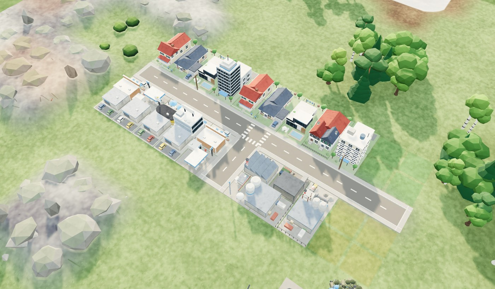
Zoning: houses and a building (residential), shops (commercial) and industries, all facing the street.
Zoning
With the HQ selected, Civic → Zoning tab: paint cells near your roads (up to 2 cells away) as residential, commercial or industrial. Drag to paint a rectangle.
Nothing appears at once. Private houses, buildings, shops and industries show up little by little, according to each city's attractiveness (R, C and I bars on the panel). At first, a city with no attractions doesn't grow: build government houses and buildings, services and jobs; as the country grows, zones fill faster and faster. Usually the first lots appear between 8 and 12 minutes, the city blooms around 17 to 23 minutes and, late in the match, a well-developed nation (police, school, hospital, jobs, advanced era) fills its zones quickly.
Every building faces the street. With two rows painted, the back one becomes the back of the same lot: the house, shop or industry gets longer.
A private house brings 1 citizen (and 1 slot); a private building, rarer, brings 5. The nation's cap is 500 inhabitants. Government houses and buildings only open slots: citizens come from the Command Center.
Industries come with a good economy, high approval and low industrial tax; each active, powered one yields 0.05 supplies per second. Houses come when there are jobs nearby, services (police, school, hospital), power and low tax. Shops come with residents and industries in the city.
Each sector has its own tax (0 to 30%): more tax, more money in the treasury, but less demand.
Lots pay tax and only use power (0.5 each). With high tax, martial law, repeated attacks, lack of power or jobs, they can be abandoned: they stay dark until you use the Demolish brush.
17Electric power
Every building uses power. Barracks, factories and modern defenses stop completely without it; gathering buildings yield less.
Power plants
Plant
Era
Power
How it works
Coal Power Plant
1
24
Burns coal according to use (up to 0.6 per second). Cheap and strong, but without coal it goes dark.
Wind Farm
2
up to 12
No fuel; yields 35% to 130% depending on the wind, which changes slowly. Upgradable to level 5: +40% power per level.
Solar Plant
3
up to 25
No fuel; daytime only (nothing at night). Upgradable to level 5: +40% power per level.
Hydroelectric Dam (Great Project)
4
90
A big, clean late-game source.
Nuclear Plant (Great Project)
4
150
The biggest source in the game.
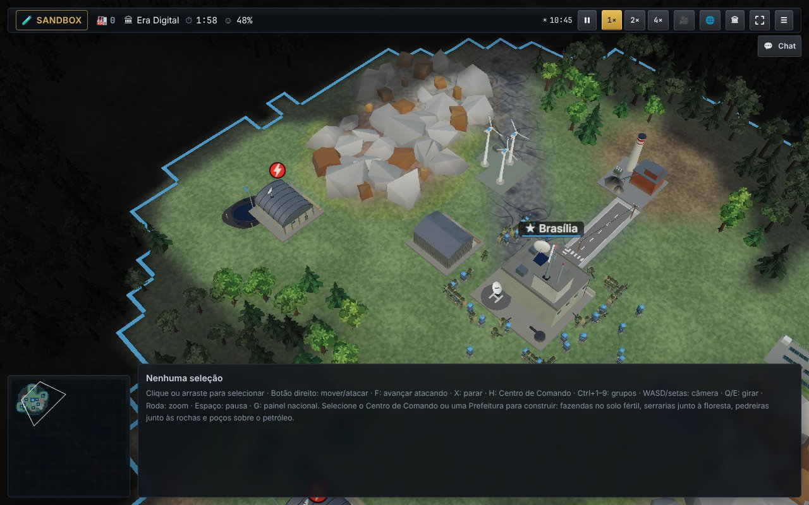
Coal plant, wind farm and solar plant near the HQ. The barracks on the left was built far from the grid: the red ⚡ shows it's stopped.
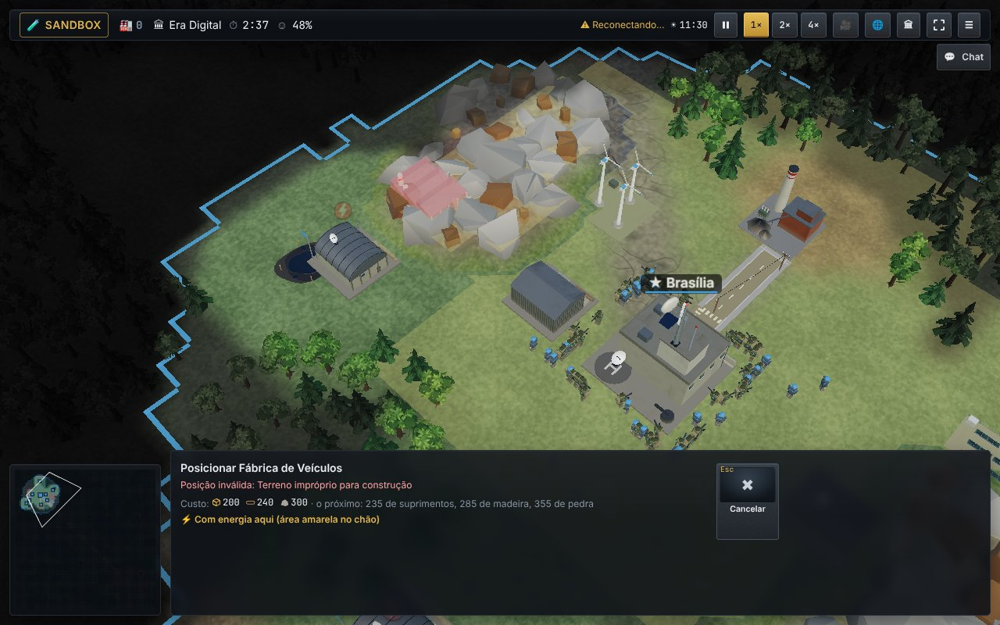
When placing, the powered area turns yellow on the ground and the panel says "⚡ Powered here".
Power travels along roads
The grid is made of your roads, the Command Center and the power plants. Roads get poles and wires.
A building up to 4 cells from the grid gets power. When placing, that area shows yellow on the ground.
Separate road pieces are separate grids: a plant only powers what is connected to it.
If generation falls short, the newest buildings go dark first; the oldest keep the power.
Who uses power
Stop without power
Use
Don't stop, but people complain
Use
Military Base
3
House
1
Vehicle Factory
6
Residential Building
2
Research Center
5
Hospital
3
Air Base
8
School, Police Station, City Hall, Terminal
2 each
Missile Silo / Iron Dome
5 / 6
5G Network / Financial Center
10 / 6
Anti-Air Battery
2
Space Program
16
Refinery / Steel Mill
5 / 6
Warehouse, Silo, Tank, Tower
1 each
Yield 75% without power: Farm, Sawmill, Quarry / Mine, Well
1 / 2
Port
3
Only the Command Center uses no power. A gathering building far from the grid doesn't stop (the economy never locks up), but yields 75%. Everyone's consumption grows with the era: ×1.3 in the Post-Cold War, ×1.6 in the Digital Age and ×2 in the Near Future, so advancing an era calls for new plants. Houses with power give up to +3 approval; neighborhoods in the dark take up to −6.
⚠ BlackoutWhen something stops without power, a blinking red ⚡ appears over the building, the power meter turns red and a "Blackout" notice arrives with the reason: not enough plants (or coal) or a building far from the grid.
💡 Attack the enemy's powerDestroying a coal plant, cutting the road that carries power or wiping out the rival's coal mines shuts down their barracks and factories. The AI does the same to you: protect your plants with anti-air.
ℹ Too much or too little coal?Coal can be bought and sold on the Trade Terminal's domestic market. Short on coal, prefer wind and solar.
18Great Projects and the Space Program
In era 4, giant works give bonuses to the whole nation. One of each per country.
Project
Bonus while it stands
Nuclear Plant
+4 supplies/s, construction 10% faster, the economy grows more
National 5G Network
Military research 30% faster, +2 sight for all troops
Hydroelectric Dam
+15% gathering of every resource, +2 supplies/s (on the water's edge)
Financial Center
Higher treasury income (+25% on top of the projects' bonus), +3 supplies/s
Space Program 🛰
Launches a satellite: you see the whole map in real time
🚀 The Space Program
It's the most expensive building in the game: about 1,950 supplies, 1,560 iron, 1,040 stone, 780 wood, 780 oil, a good chunk of the national treasury and 6 minutes of work. It requires HQ level 9 and the Space technology research.
With the building finished, select the space center and hold the authorize button.
A 10-second countdown, with steam coming off the pad.
Ignition: a flash, smoke, shaking — and the rocket climbs until it disappears into the sky.
The satellite goes into orbit and appears circling the Globe, with your flag, for everyone to see.
From then on, the fog of war is gone for you: every enemy troop and building is visible and becomes a target for aircraft and missiles. Only land mines stay hidden.
⚠ Protect the investmentGreat Projects are huge targets. Surround them with anti-air and troops: if one is destroyed, its bonus ends.
19Each country's bonus
Every country has its own advantage. Pick the one that suits the way you play.
Country
Bonus
Effect
🇧🇷 Brazil
Jungle warfare
Troops 25% faster in forests; half the attrition in enemy land
🇦🇷 Argentina
Breadbasket of the world
+25% food
🇺🇸 United States
Air logistics
Aircraft 30% cheaper
🇲🇽 Mexico
Assembly industry
Armored Vehicle 20% cheaper
🇩🇪 Germany
Armored engineering
Tanks with 15% more health
🇫🇷 France
Intervention force
Special Forces and Anti-Tank 20% cheaper
🇮🇳 India
Large manpower reserve
Recruits 25% cheaper
🇯🇵 Japan
Industrial efficiency
Construction 15% faster
🇿🇦 South Africa
Strategic minerals
+30% iron
🇦🇺 Australia
Large-scale mining
+20% stone and iron
🇬🇧 United Kingdom
Elite special forces
Special Forces with +20% health and 15% cheaper
🇨🇳 China
Mass production
Troops produced 20% faster
🇮🇹 Italy
Civil engineering
Construction 12% faster and +10% stone
🇨🇦 Canada
Forest resources
+25% wood
🇸🇦 Saudi Arabia
Abundant oil
+30% oil
🇪🇸 Spain
Mountain infantry
Infantry 15% cheaper and +10% health
🇪🇬 Egypt
Anti-air wall
Own anti-air 20% more effective
🇷🇺 Russia
Massed artillery
Artillery and Rocket Launchers 25% cheaper
🇹🇷 Turkey
Defense industry
Mobile Anti-Air and Armored Vehicle 15% cheaper
🇰🇷 South Korea
Superior air defense
Own anti-air 30% more effective
🇰🇵 North Korea
Mass army
Artillery 20% and recruits 15% cheaper
The bonus shows on the country card in the room. Each country also has a starting region (forest, oil, farmland…) that changes the resources near your base.
20Strategy tips
The commander's 10 commandments
Never stop training citizens early on. Idle people mean an idle economy.
Find your bottleneck. The resource you're shortest on decides what to build next.
Don't let resources sit at the limit. A full warehouse is production thrown away.
Upgrade the Command Center early: it unlocks eras and upgrades for everything else.
Explore. Knowing where the enemy and the deposits are is worth more than a tank.
Defend yourself before the preparation period ends. The AI's first wave arrives on time.
Mix your troops. A one-type army has an obvious counter.
Give your artillery sight. Without eyes, it doesn't fire.
Take care of your people. Too many casualties, high taxes and famine bring down approval — and the government.
Use diplomacy. A defense agreement sends free supplies; sanctions weaken the enemy without firing a shot.
Common beginner mistakes
Well without a tankThe oil well only works with an Oil Tank within 9 cells.
No recruitsClicked the troop and nothing happened? There's no recruit in the reserve. Enlist at the Military Base.
Attacking without warTroops don't fire? Meet the enemy and declare war on the Globe first.
Army far from homeTroops in enemy land lose health. Take an Armored Vehicle along.
Barracks in the darkBuilt far from the road and production doesn't move? Look for the red ⚡: run a road there or build in the yellow area.
Coal-only powerWithout a mine, coal runs out and everything goes dark. Build a mine early or mix in wind and solar.
Three strategies to try
⚡
Fast attack
Minimal economy, lots of soldiers and armored vehicles, attack right after the preparation period. Good against slow builders.
🏗
Strong economy
Lots of gathering and upgrades, defense with towers and anti-tank, fast era advances. Wins in the long run.
🗺
Expansion
City halls and roads to dominate the map. Can lead to a territorial victory (70% of the map).
21Moving troops by sea and air
Wide rivers, oceans and islands don't stop an army: take it by ship or by aircraft.
Loading a ship
Have a ship that carries troops: the L402 Landing Ship (up to 10 soldiers and 10 vehicles) or the Frigate (up to 15 soldiers). Both come from the Port.
Select the troops and right-click the ship (on phones, long press on the ship). They walk to the shore and board.
Select the ship and send it near the destination coast.
With the ship selected, right-click on land: the troops disembark on the coast closest to that spot.
The L402 is unarmed: escort it with frigates. A sunk ship takes its cargo down with it.
Only the owner sees what's aboard: the enemy doesn't know how many troops the ship carries.
Vehicles and ships burn fuel as they move (chapter 5).
Paratroopers: the C-5 Galaxy
The C-5 Galaxy comes from an Air Base at level 2 and requires the Airborne operations national research. It carries up to 12 soldiers and 3 vehicles at once.
Bring the troops near the Air Base (within 14) and keep them selected.
Select the Air Base, click Paratroopers and then the drop point, within range (200).
The aircraft flies there and the troops jump into an area of 5 cells around the point. Then it returns to base.
⚠ On the way down, they are targetsDuring the descent (3 to 5 seconds; vehicles take longer) troops don't fire, but they can be hit. If the C-5 is shot down on the way, everyone aboard dies. Dropping into another nation's territory is only allowed at war with it. Clear the target's anti-air first.
Aircraft carrier
The Aircraft Carrier (era 3, Carrier aviation research) carries 4 fighters and their four pilots, besides the crew. The fighters take off from it to attack discovered targets near the coast. If it sinks, the fighters aboard are lost.
Islands: the Archipelago map has no bridges. To take an uninhabited island, bring a troop or a ship there and build a City Hall within 8 cells of it (chapter 16).
💡 Land in two wavesFirst send frigates to clear the coast and enemy towers; then the L402 with tanks and anti-tank infantry. Paratroopers behind the lines, at the same time, split the defense.
22Connection, drops and performance
The game runs in the browser. If the internet or the device fails, it tries to save your match.
Lost your connection?
Get back into the same match just by opening the game again, on the same account: it reconnects on its own and takes you straight to your slot. You don't need the room code.
When you come back, the game receives only what changed while you were away, without downloading the whole map again.
Against the AI, the match pauses while you're away, and you have 1 minute to come back.
Between players, the match pauses for up to 90 seconds when someone drops (up to 3 times per player; the others can resume earlier), and whoever dropped has 3 minutes to come back. After that, their nation is declared abandoned, and the defeat screen says why.
If the server restarts (during an update, for example), matches are saved and come back when the players reconnect.
⚠ Leaving through the menu is not the same as droppingLeaving the match through the menu (or Surrendering) counts as giving up right away. Need to step away for a bit? Against the AI, pause; between players, use one of the match's 3 pauses (up to 60 seconds each).
Graphics stopped?
On weaker devices, the browser sometimes releases the graphics card and the map goes white while the interface keeps working. The game notices:
The "Graphics stopped" notice appears with a Reload in light mode button: the page reloads and goes back to the same match.
The game switches to light mode on its own (Mobile/Low quality, no shadows). In Settings you get the option to switch back to the previous quality.
Choosing the quality by hand turns automatic light mode off.
For a lighter game
In Settings, choose the graphics quality suggested for your device. It only changes the look, never the rules.
On phones, use full screen and close other apps.
The game sends less data about troops far from the camera: looking at a quiet area of the map makes the connection even lighter.
ℹ Help us improveFound a problem? Use What's new → send your feedback in the menu. Every report is read, and many have already become fixes.
23Glossary
Term
Meaning
Caravan
A truck that carries supplies between a city hall and the HQ; it only moves by road.
Colony
A city hall built on neutral land with a troop or ship of yours nearby.
Contact
Knowing another nation; on the map, it comes from meeting. Without it, there's no war, pact or trade.
Attrition
Health lost by troops in enemy territory without an armored vehicle nearby.
Command Center (HQ)
Your capital on the map. If it falls, you lose.
Rising cost
Each new building of the same type costs 18% more.
Blackout
Buildings stopped for lack of power (low generation or far from the grid).
Deposit
A group of cells of one resource (forest, rock, ore, oil field). It runs out with use.
Era
A stage in your nation's evolution; unlocks troops and buildings and changes the look.
Specialization
A permanent choice made at a building's level 6.
Stability
How firm the government is. Below 10 for 60 days, the government falls.
Bottleneck
The resource that most limits your growth right now.
Border incident
A quick AI harassment during the preparation period, without declared war.
Anti-tank mine
An Engineer's trap that only goes off for enemy vehicles; invisible even to the satellite.
Domestic market
Selling surplus for supplies at the Trade Terminal; the price drops with sales and recovers over time.
Theater logistics
Supplies per second that the budget's Defense area sends to the base.
Power grid
Roads, Command Center and power plants; carries power up to 4 cells around.
Fog of war
The part of the map you can't see right now.
Public room
A multiplayer room that shows up in the menu's public room list.
Pact
Non-aggression or alliance between nations on the map; breaking it is expensive.
Tool wheel
The button in the bottom-right corner: Build, Research, Nation, Diplomacy, Trade and Globe.
Highway
A dual carriageway that leaves the border over neutral land; doubles cargo speed and speeds up troops.
Preparation period
The first minutes, when the AI doesn't declare war.
Recruit
A person in the military reserve; crews each troop or aircraft.
Theater of operations
The match's 3D map.
National treasury (US$)
Money that pays for the army, the budget areas, upgrades, roads, eras and projects. It receives production, taxes and trade; it never goes negative.
Veterancy
Rank earned with kills: Veteran, Elite and Hero.
Good luck, Commander!The best way to learn is to play. Start with the Tutorial, play on Easy, test troops in the Sandbox and come back to this guide whenever you have a question.
 1234567
1234567